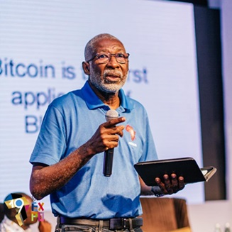

Nii Narku Quaynor (born 1945) is a Ghanaian scientist and engineer who has played an important role in the introduction and development of the Internet throughout Africa.
Quaynor graduated in engineering science from Dartmouth College in 1972, and received a Bachelor of Engineering degree from the Thayer School of Engineering in 1973. He then studied Computer Science, obtaining an M.S. from the State University of New York at Stony Brook in 1974, and a Ph.D. from the same institution in 1977. He attended the Kinbu Secondary Technical School, Adisadel College and Achimota School in Ghana. He is one of the founding members of the Computer Science Department at the University of Cape Coast in Ghana, and continues to hold a professorship there.[2] He is also a member of the Council of the University of Ghana. In 2000, he became director of ICANN for the African region.
